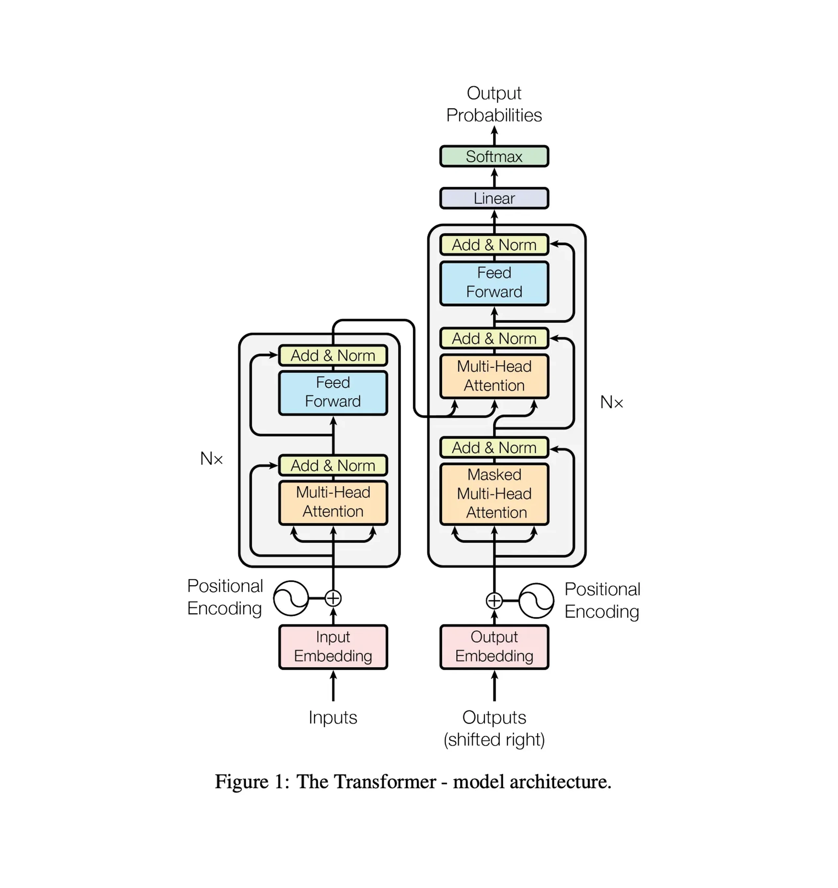
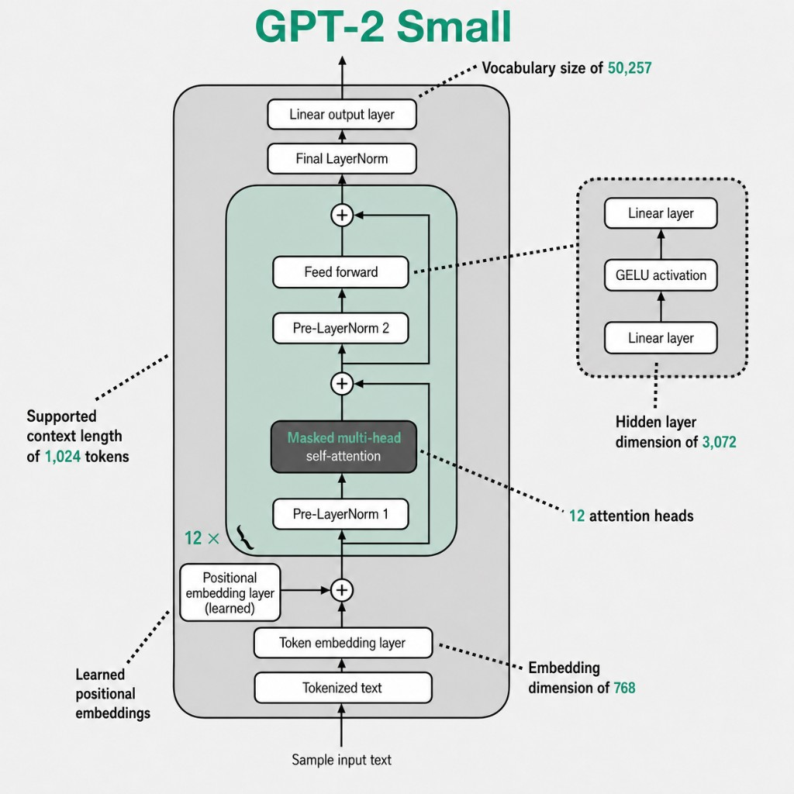
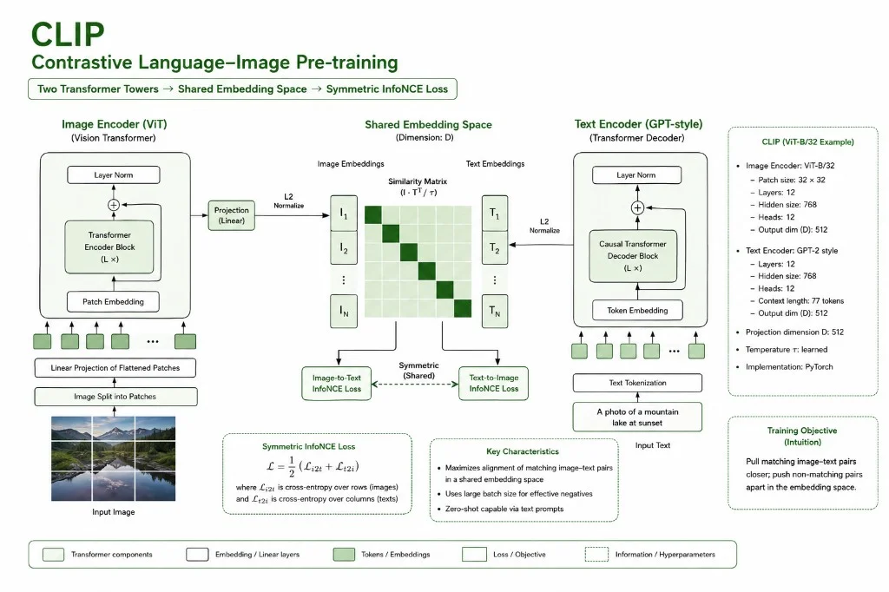
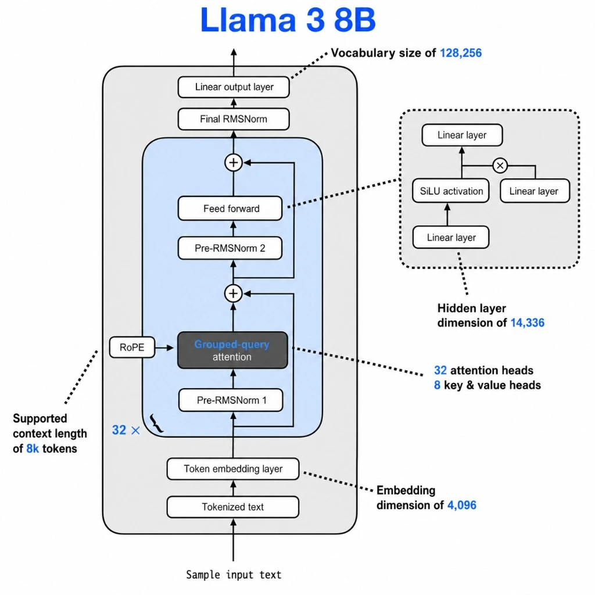
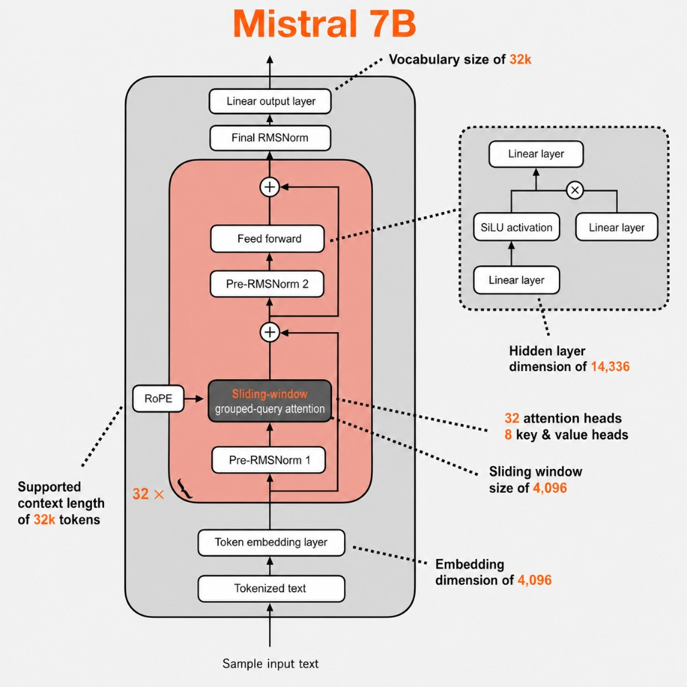
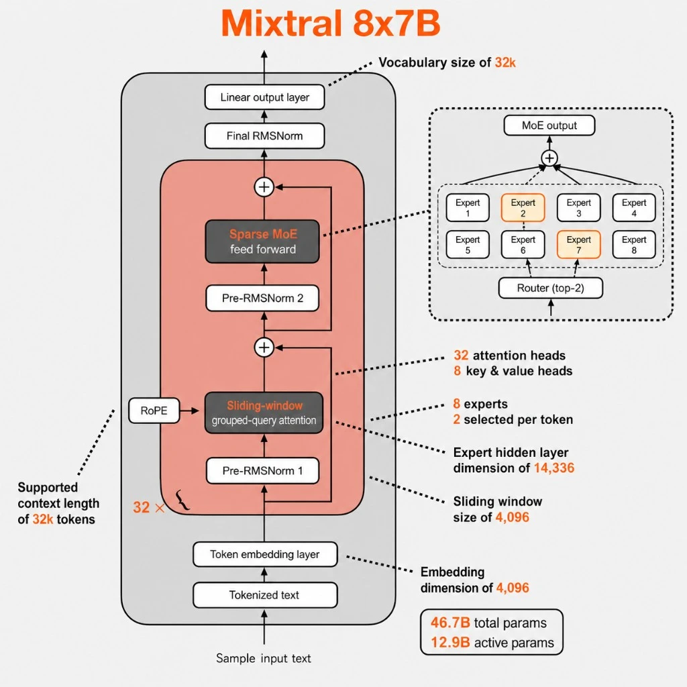
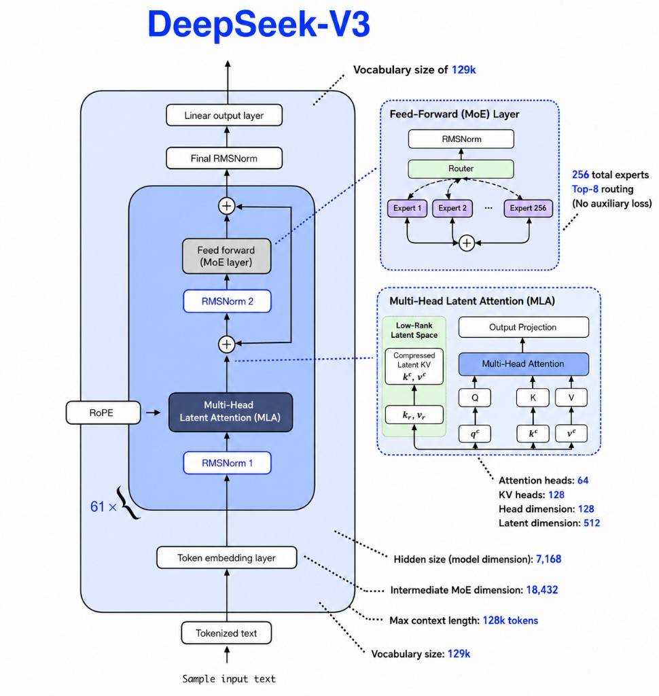
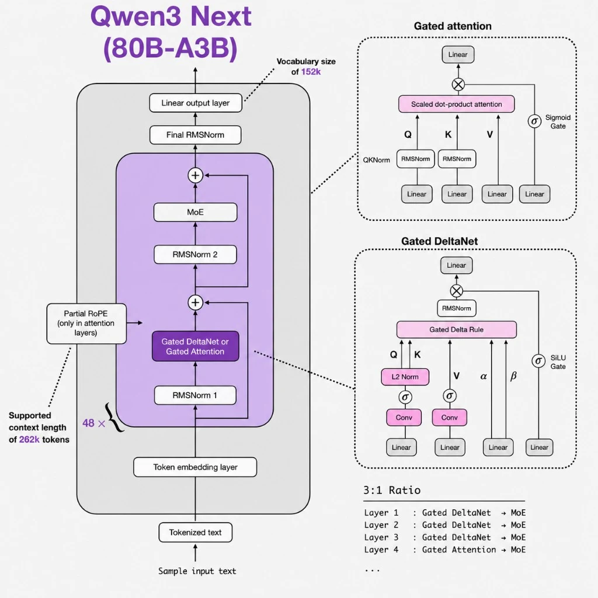

Attention Is All You Need
2017 · Vaswani et al.The encoder-decoder Transformer that started everything. Sinusoidal PE, multi-head attention, LayerNorm, ReLU FFN — all built from scratch in PyTorch.

GPT-2
2019 · Radford et al. (OpenAI)Decoder-only. Learned positional embedding replaces sinusoidal. Pre-norm (LayerNorm before sub-blocks). GELU replaces ReLU.

CLIP
2021 · Radford et al. (OpenAI)Dual encoders map images and text into one contrastive space — patch ViT + causal text tower, L2-normalised dot products, symmetric InfoNCE.

LLaMA
2023 · Touvron et al. (Meta)RoPE replaces learned PE. RMSNorm replaces LayerNorm. SwiGLU replaces GELU. Grouped Query Attention. No bias, no embedding scaling.

Mistral 7B
2023 · Mistral AISliding window attention (W=4096) replaces full causal. Rolling buffer KV cache bounds memory. Otherwise identical to LLaMA.

Mixtral 8×7B
2023 · Mistral AIFirst sparse MoE at scale. Replace each dense FFN with 8 expert FFNs and a router that picks top-2 per token. ~46.7B stored, ~12.9B active.

DeepSeek V2 & V3
2024 · DeepSeekV2 introduces MLA and DeepSeekMoE (236B, 21B active). V3 scales to 671B with auxiliary-loss-free routing, MTP, and FP8 training.

PaliGemma
2024 · Google DeepMindSigLIP vision encoder + LinearProjector + Gemma decoder. Image patch tokens prepended as prefix; generative VLM via next-token prediction.

Qwen3-Next 80B-A3B
2025 · Alibaba80B total / 3B active. Hybrid 3:1 Gated DeltaNet + Gated Attention. High-sparsity MoE + shared expert. MTP. 256K context.